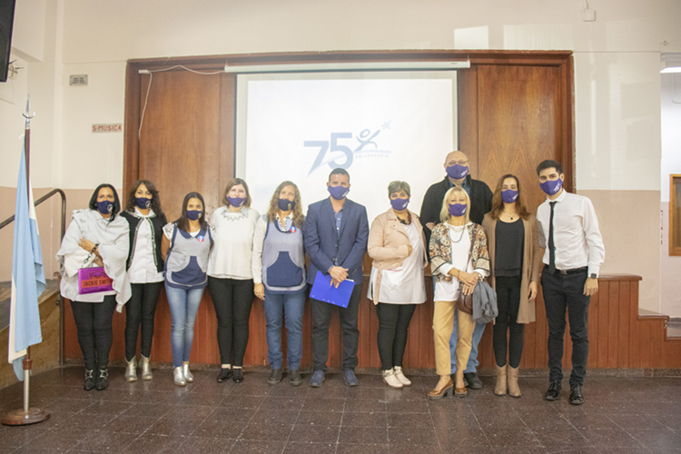

Últimas novedades
75 ANIVERSARIO DE LA E.N.S.
El 31 de marzo la Escuela Normal Superior "Juan Bautista Marenzi" celebró su 75º aniversario. En 1986, en una Argentina atravesada por los desafíos de la reconstrucción democrática, Ernesto Sabato dijo: “la búsqueda de una vida más humana debe comenzar por la educación”. Seguramente fue esa idea, consciente o inconscientemente, la que, cuarenta años antes de que el escritor argentino pronunciara esas palabras, alentó a un grupo de ciudadanos colosenses a movilizarse para brindarle a nuestra comunidad la oportunidad de acceder a uno de los derechos fundamentales de las personas. Fue en 1946 cuando se abrieron las puertas de la que sería conocida más tarde como la Escuela Normal Superior “Juan Bautista Marenzi”. Su nombre fue un homenaje a quien era Intendente Municipal cuando las aulas recibieron a nuestros primeros estudiantes. Con motivo de la situación sanitaria, en vez de los actos masivos que estas celebraciones nos tienen acostumbrados, se realizará, mes a mes, distintas ceremonias conmemorativas, con público reducido, de acuerdo con el avance epidemiológico. La primera de esas actividades fue el descubrimiento de la placa conmemorativa. “Mantenemos viva una Comunidad Educativa en la cual nos dignifica ser artífices de la concreta construcción de los sueños de nuestros estudiantes.”